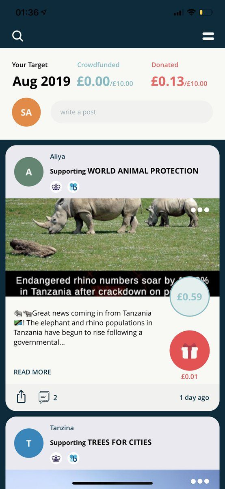
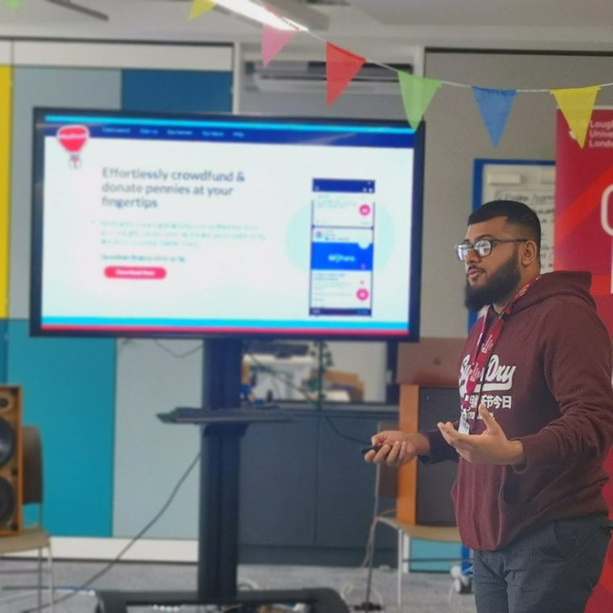
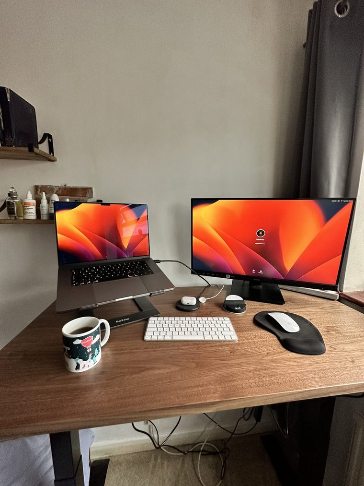

The best thing I did at Goldman Sachs was talk my way onto someone else's janky side project. Mehti prayed next to me every day. One afternoon on the way out I asked how it was going. I meant it as a greeting. He heard it as a question about his startup, and started telling me everything. He'd coded it himself and it barely worked. The idea was that every like turns into a penny for charity, so content creators could fundraise just by posting. I couldn't stop thinking about it. So I asked if I could work on it. I was 19. The whole company was two co-founders, one engineer, and me. We got into an accelerator called Fast Forward in Stratford. My Goldman apprenticeship was three days work, two days uni, so I started skipping the uni days and going to the programme instead. I didn't have a growth strategy. I just started posting about what we were building on Twitter because it felt like the obvious thing to do. Then I found a hook that made people finally get what MiniDeed was, and one tweet went viral. That turned into a funnel into a Telegram community, and it kept growing on its own. Then Ramadan hit. High profile Muslim creators started reaching out, New Arab, Islam Channel. We ran a campaign and the numbers got kind of mad. 26,000 donations, 800,000 taps, 47,000 posts across 26 countries. oh btw - he never did tell me how he was doing.
MiniDeed
2018 – 2021
A social app where every like was worth a penny to charity. My first startup, which I talked my way onto while I was an apprentice at Goldman Sachs.
- £26kraised, all of it to charity
- £0revenue, ever
- 25countries
What I say about it now, and what I was actually posting at the time.
It started in the basement prayer room at Goldman. Mehti prayed next to me every day, and one afternoon on the way out I asked how he was doing, just being polite. He heard it as a question about his startup and told me everything.
The pitch fit in one line. You see a cause on social media and feel helpless because all you can do is raise awareness, so we made the awareness itself worth something.
You ever see a cause on social media and feel helpless because the only thing you can do is just raise awareness? That’s why we created MiniDeed, an app where you raise money for the causes you care about by creating posts and donate pennies to other causes!

I was in the first year of my apprenticeship and had no idea what I was doing, so I kept showing it to people. The company was two co-founders, one engineer and me. I did users and support, worked out what to build next, and posted about all of it.
never I thought I’d read minideed praise in another language in just 2 month but we’re already here. MiniDeed is going international! 🇮🇹 ✈️
Having a lot of fun presenting @MiniDeed at @FFWDLondon. Been sharing your comments and ideas, they love it! Keep it up!

People started opening up about their mental health on it, and users told us it was the only app where they felt safe doing that.
MiniDeed is really precious tonight with all the wonderful MiniDeeders sharing their mental health struggles with the #MiniStruggle hashtag. I love the safe space it’s creating for people to open up in this way
By the end it had raised £26,000 across twenty-five countries, entirely through likes.
This MiniDeed journey has been amazing thank you all you MiniDeeders that have joined us on this journey this year. Without you we couldn’t have reached over 25 countries and raised £26k through just likes ♥️ 2021 is about to be even better with you guys you’re not ready...
Then the users started guarding it. Someone would post something a bit off, within the rules and outside the spirit of it, and other users would step in before we'd even seen it. Nobody asked them to. It felt incredible and it was also the ceiling, because we'd built a room that only fit one kind of person.
Years before Simply Smashed I built a little app, and one day the users started throwing people out. I never told them to. It was called MiniDeed. Every like was a real penny to charity, and I've told the origin story on here before, so I'll skip to the part I got wrong. We went viral during Ramadan. 47,000 posts, 26 countries, eight hundred thousand taps. And the part I didn't see coming was what people did with the place once they were in it. Someone would post something a bit off. Within the rules, but not in the spirit of the thing. And before we'd even seen it, other users would step in. "This isn't what this is for." Nobody asked them to. They'd bought into it hard enough to guard it themselves. It felt incredible. It was also the ceiling. Because we were trying to crack the algorithm and reach new kinds of people, and we'd quietly built a room that only fit one kind. Everyone else could feel it from the door. For ages I filed that under mistakes. I've stopped, because I now sit on calls every week with founders trying to build something for everyone, and I recognise the trap from the other side. A product that everyone finds acceptable has nobody guarding it. The one that a specific group would run through a wall for gets guarded for free, and it also gets a ceiling. You do not get one without the other. I'd take the wall-runners every time now. I just wish I'd known I was choosing.
The part I got wrong was taking follower counts away. They felt toxic to us, and a lot of people left over it.
We raised £26,000 for charity through an app where every like was worth 1p. We made exactly £0 in revenue. I was 18. First year of my degree apprenticeship at Goldman Sachs. I met the co-founder in the basement prayer room. We'd just finished praying and I asked him how he was doing, just being polite, and he mistook it as me asking how the app was doing. This man was probably mid-thirties, been at Goldman for years, and he just started telling me about this social media platform where every like triggered a micro-donation to charity. I had no idea what he was talking about. But I was in. That's how MiniDeed started for me. 1p, 2p, 5p. Tiny amounts that added up across 25 countries over two years. We onboarded Islamic Relief, Human Relief Foundation, a bunch of smaller orgs. We got featured in The New Arab. And somehow built a community where people were opening up about mental health because the whole vibe was just different. Users told us it was the only app where they felt safe doing that. Honestly watching the live donation ticker go up was more addictive than any MRR dashboard I've looked at since (and I say that as someone who now stares at dashboards for a living). We never figured out how to make money from it. Donations still trickle through the app daily, years later. But it was my first real taste of building something and I think about it all the time. 18 years old, sitting in Goldman Sachs by day, shipping a charity app by night. It led me to build the highest-rated burger joint in London. And now Draper.
Donations still trickle through daily, years after we stopped touching it. I kept the mug.
In love with my new desk 😍 ft my minideed mug
